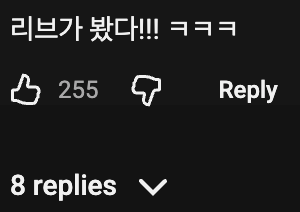
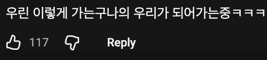
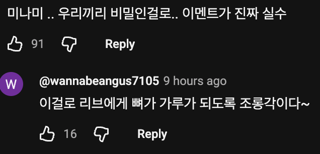
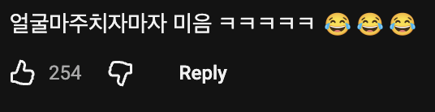
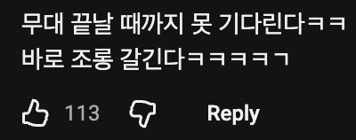
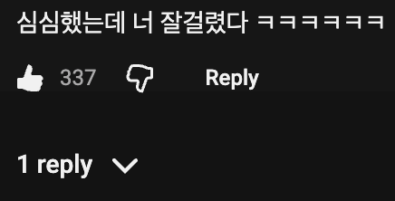

실시간으로 리브에게 조롱당했다고 함
참고: 💃 리센느 리브가 팬들에게 하고싶었던 말






실시간으로 리브에게 조롱당했다고 함
(갸루 미나미 당황 콘)
귀업네 미음은 왜 미음이란거?
망했다 -> ㅁ
축약이 ㅋㅋㅋㅋ 무리브
아이돌이라 망했다 이런말은 부정적이라 소속사에서 하지말라니까 자기들끼리 미음으로 바꿔서 말함ㅋㅋ
근묵자흑. 다음번 신논현센세의 미션이다.
까엉이 웃참표정 ㅋㅋ
ㅋㅋㅋㅋ ㅁ
완벽주의자아니었음? ㅋㅋㅋ
이거 현장에서 봤는데 미나미 진짜 당황한 거 티나서 어쩔 줄 몰라하더라 ㅋㅋㅋㅋㅋㅋㅋ